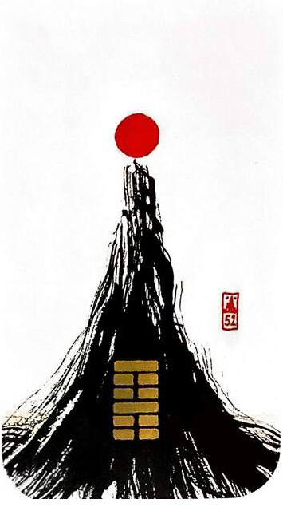

중산간(그칠 간)
대흉괘 8
주역(변함)에 위배되는 카드, 숙성의 시간(구간), 대기만성 카드
도닦거나 명상에는 좋음그칠 것을 알아 그치면 허물이 없어진다묵직한 무게감으로 늘 자리를 지키고 있는 산비가 오나 바람이 부나 멈춰있는 상황을 표현한 그림
그치다.머무르다.계속유지하다.초연함.심사숙고.침착함.평정심.지속.묵묵하다.티끌모아 태산.대기만성
연애운
무덤덤.오랜 친구처럼 편안함.안정적인 관계.의리.우정.동료애
사업운
자신의 맡은 일을 묵묵히 잘해냄.뒤늦게 인정 받음. 일이 속히 이루어지지 않음
속마음
썸무덤덤한 마음.친구같은 마음
1년 이상편안하고 안정되고 한결같은 마음
이별 후묵묵히 기다리는 마음
솔로연애운
새로운 이성 생길 확률 낮다
건강운
환자.노인은 위급한 상태.과로.신경계통.소화기능 주의